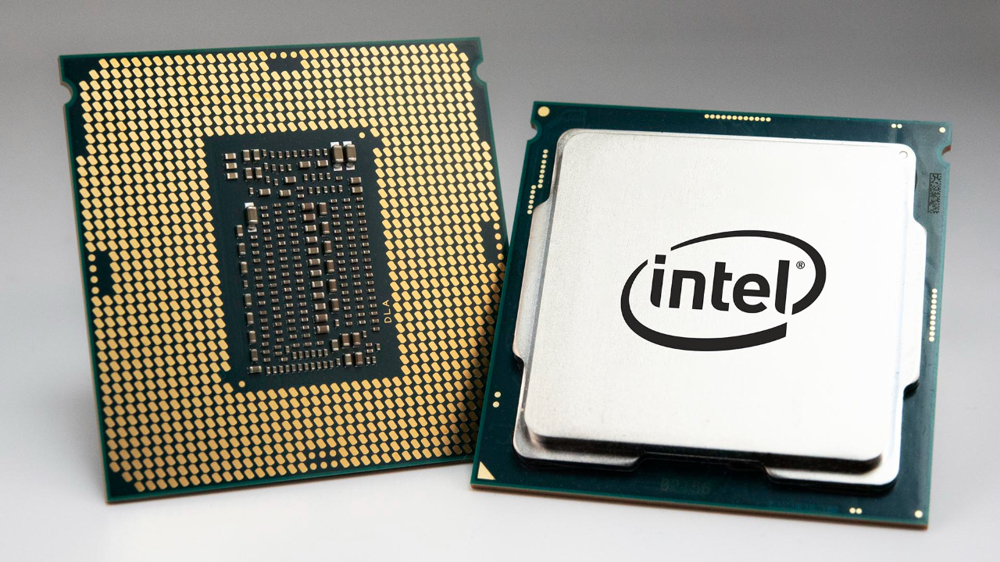

¿Qué es una computadora?
En términos generales:
Una computadora, también conocida como computador u ordenador, es una máquina electrónica digital programable que puede procesar, almacenar y recuperar datos.
Las computadoras son capaces de realizar una amplia gama de tareas, desde simples cálculos matemáticos hasta complejas simulaciones científicas y procesamiento de imágenes.
Su funcionamiento se basa en la ejecución de instrucciones o programas, los cuales definen las operaciones que la computadora debe realizar con los datos.
Componentes principales:
Las computadoras están compuestas por diversos componentes que trabajan en conjunto para lograr su funcionamiento:
- Unidad central de procesamiento (CPU): Es el "cerebro" de la computadora, donde se realizan los cálculos y las operaciones lógicas.
- Memoria: Almacena los datos y programas que la CPU necesita para funcionar. Se divide en memoria principal (RAM) y memoria secundaria (discos duros, unidades de estado sólido, etc.).
- Dispositivos de entrada: Permiten ingresar datos a la computadora, como teclados, ratones, escáneres, cámaras web, etc.
- Dispositivos de salida: Muestran la información procesada por la computadora, como monitores, impresoras, altavoces, etc.
- Software: Es el conjunto de programas y aplicaciones que permiten a la computadora realizar tareas específicas.
Tipos de computadoras:
Existen diversos tipos de computadoras, clasificadas según su tamaño, potencia, uso y propósito:
- Supercomputadoras: Las más potentes, utilizadas para investigaciones científicas complejas y simulaciones.
- Mainframes: Grandes computadoras que procesan grandes volúmenes de datos para empresas y organizaciones.
- Minicomputadoras: Más pequeñas que las mainframes, utilizadas para tareas específicas en empresas y entornos educativos.
- Microcomputadoras: Las computadoras personales de escritorio, laptops y tabletas que utilizamos comúnmente.
- Dispositivos móviles: Smartphones, tablets y otros dispositivos portátiles que permiten acceder a la información y realizar tareas desde cualquier lugar.
¿Qué es el procesador?
Definición y función:
El procesador, también conocido como CPU (por sus siglas en inglés Central Processing Unit), es el componente central de una computadora. Se le considera el "cerebro" del sistema, ya que es el encargado de interpretar las instrucciones de los programas y procesar los datos.
En términos simples, el procesador toma las instrucciones del software que se está ejecutando, las decodifica y las convierte en señales que controlan las operaciones aritméticas y lógicas que se realizan con los datos.

Componentes principales:
El procesador está formado por diversos componentes que trabajan en conjunto para lograr su funcionamiento:
- Unidad de control (CU): Es el "director de orquesta" del procesador. Se encarga de coordinar las operaciones de las demás unidades y leer las instrucciones de los programas.
- Unidad aritmético lógica (ALU): Es el "corazón" del procesador. Realiza las operaciones aritméticas (suma, resta, multiplicación, división) y lógicas (comparaciones, decisiones) con los datos.
- Registros: Son pequeñas unidades de memoria de alta velocidad que almacenan datos temporales que la CPU necesita para realizar sus operaciones.
- Caché: Es una memoria interna de alta velocidad que almacena datos y programas de uso frecuente para que la CPU pueda acceder a ellos más rápidamente.
- Bus: Es el conjunto de canales de comunicación que permiten la transferencia de datos entre las diferentes unidades del procesador y con la memoria principal.
Características:
Las características principales de un procesador que determinan su rendimiento son:
- Velocidad de reloj: Se mide en gigahercios (GHz) e indica la frecuencia con la que el procesador puede ejecutar instrucciones.
- Número de núcleos: Un núcleo es una unidad de procesamiento independiente dentro del procesador. Los procesadores modernos tienen múltiples núcleos, lo que les permite realizar múltiples tareas simultáneamente.
- Arquitectura: Define la forma en que el procesador está diseñado y cómo procesa las instrucciones. Las arquitecturas más comunes son x86 (utilizada en PCs) y ARM (utilizada en dispositivos móviles).
- Tamaño de caché: Un mayor tamaño de caché permite almacenar más datos y programas de uso frecuente, lo que mejora el rendimiento del procesador.
- Conjunto de instrucciones: Define las instrucciones que el procesador puede entender y ejecutar.
Fabricantes:
Los dos principales fabricantes de procesadores para computadoras personales son:
- Intel: Líder del mercado con su línea de procesadores Core (i3, i5, i7, etc.).
- AMD: Ofrece procesadores Ryzen como alternativa a los de Intel.
Elección de un procesador:
La elección de un procesador adecuado depende de las necesidades y el presupuesto del usuario.
Para tareas básicas como navegar por internet, usar correo electrónico y procesar textos, un procesador básico puede ser suficiente.
Sin embargo, para tareas más exigentes como juegos, edición de video o diseño gráfico, se necesita un procesador más potente con más núcleos y mayor velocidad de reloj.
¿Qué es la memoria RAM?
Definición y función:
La memoria RAM (Random Access Memory), también conocida como memoria de acceso aleatorio, es un tipo de memoria volátil que se utiliza para almacenar datos y programas de forma temporal en una computadora.
La memoria RAM es esencial para el funcionamiento de una computadora, ya que permite que la CPU (Unidad Central de Procesamiento) acceda rápidamente a los datos e instrucciones que necesita para ejecutar programas y realizar tareas.
Funcionamiento:
La memoria RAM funciona mediante el uso de chips de memoria que almacenan datos en forma de celdas. Cada celda tiene una dirección única que permite a la CPU ubicar y acceder a los datos específicos que necesita.
Cuando un usuario abre un programa o archivo, la información se carga desde el almacenamiento permanente (como el disco duro) a la memoria RAM.
La CPU accede a los datos en la memoria RAM para ejecutar el programa o procesar el archivo.
Cuando el usuario cierra el programa o archivo, la información se elimina de la memoria RAM para liberar espacio para otros datos.
Tipos de memoria RAM:
Existen diferentes tipos de memoria RAM, cada uno con sus propias características y rendimiento:
- DDR (Double Data Rate): La tecnología de memoria RAM más común en la actualidad. Permite transferir datos dos veces por ciclo de reloj, lo que mejora el rendimiento.
- DDR2: Una tecnología más antigua que DDR, con menor velocidad y menor consumo de energía.
- DDR3: Una tecnología más rápida que DDR2, pero con mayor consumo de energía.
- DDR4: La tecnología de memoria RAM más reciente, con mayor velocidad y menor consumo de energía que DDR3.
- LPDDR (Low Power DDR): Una variante de memoria RAM diseñada para dispositivos móviles, con menor consumo de energía y tamaño compacto.
Capacidad de la memoria RAM:
La capacidad de la memoria RAM se mide en gigabytes (GB). Una mayor capacidad de memoria RAM permite almacenar más datos y programas a la vez, lo que puede mejorar el rendimiento general de la computadora.
Sin embargo, la cantidad de RAM necesaria depende del tipo de tareas que se realizan en la computadora.
Para tareas básicas como navegar por internet y usar aplicaciones de oficina, 4 GB de RAM pueden ser suficientes.
Sin embargo, para tareas más exigentes como juegos, edición de video o diseño gráfico, se recomiendan 8 GB o más de RAM.
Factores que afectan el rendimiento de la memoria RAM:
El rendimiento de la memoria RAM se ve afectado por varios factores, incluyendo:
- Tipo de memoria RAM: DDR4 es más rápida que DDR3, por lo que ofrecerá un mejor rendimiento.
- Velocidad de la memoria RAM: Una mayor velocidad de reloj permite transferir datos más rápidamente, lo que mejora el rendimiento.
- Cantidad de memoria RAM: Una mayor capacidad de memoria RAM permite almacenar más datos y programas a la vez, lo que puede mejorar el rendimiento general de la computadora.
- Multitarea: Si se ejecutan varios programas al mismo tiempo, la memoria RAM se llenará más rápidamente, lo que puede afectar el rendimiento.
Consejos para optimizar el uso de la memoria RAM:
- Cerrar programas y archivos que no estén en uso.
- Evitar tener demasiadas pestañas abiertas en el navegador web.
- Actualizar el sistema operativo y los controladores de dispositivo.
- Analizar la computadora en busca de malware y virus.
- Aumentar la cantidad de memoria RAM si es necesario.
¿Qué es el Disco Duro?
Definición y función:
Un disco duro, también conocido como unidad de disco duro (HDD) o unidad de disco rígido (UDD), es un dispositivo de almacenamiento de datos que utiliza discos magnéticos giratorios para almacenar y recuperar datos digitales.
Los discos duros son el principal medio de almacenamiento en la mayoría de las computadoras, ya que permiten almacenar grandes cantidades de datos a un costo relativamente bajo.
Componentes principales:
Los discos duros se componen de varios componentes que trabajan en conjunto para lograr su funcionamiento:
- Platos: Son discos circulares rígidos recubiertos de un material magnético, donde se almacenan los datos.
- Cabezales de lectura/escritura: Se mueven sobre la superficie de los platos para leer y escribir datos.
- Eje: Hace girar los platos a alta velocidad.
- Motor: Proporciona la energía necesaria para hacer girar los platos.
- Circuito electrónico: Controla el funcionamiento del disco duro y la transferencia de datos.
- Carcasa: Protege los componentes internos del disco duro del polvo y la suciedad.
Funcionamiento:
Los datos se almacenan en los platos como pequeñas áreas magnetizadas.
Los cabezales de lectura/escritura utilizan un campo electromagnético para leer la información de las áreas magnetizadas o escribir nueva información en ellas.
El motor hace girar los platos a alta velocidad, lo que permite que los cabezales accedan rápidamente a los datos.
Tipos de discos duros:
Existen dos tipos principales de discos duros:
- Discos duros mecánicos (HDD): El tipo de disco duro más común, utiliza platos giratorios y cabezales de lectura/escritura para almacenar y recuperar datos.
- Discos duros de estado sólido (SSD): Un tipo más nuevo de disco duro que utiliza memoria flash para almacenar datos. Los SSD son más rápidos, silenciosos y eficientes que los HDD, pero también son más costosos.
Características:
Las características principales de un disco duro que determinan su rendimiento y capacidad son:
- Capacidad: La cantidad de datos que puede almacenar el disco duro, medida en gigabytes (GB) o terabytes (TB).
- Velocidad de giro: La velocidad a la que giran los platos, medida en revoluciones por minuto (RPM). Una mayor velocidad de giro generalmente significa un mejor rendimiento.
- Tamaño del búfer: Una pequeña memoria caché que almacena datos de uso frecuente para que la CPU pueda acceder a ellos más rápidamente.
- Interfaz: El tipo de conexión que utiliza el disco duro para comunicarse con la computadora. Las interfaces comunes incluyen SATA, IDE y SCSI.
Fabricantes:
Algunos de los principales fabricantes de discos duros son:
- Seagate
- Western Digital
- Samsung
- Toshiba
- Hitachi
Elección de un disco duro:
La elección de un disco duro adecuado depende de las necesidades y el presupuesto del usuario.
Para usuarios que necesitan almacenar grandes cantidades de datos a un bajo costo, un disco duro mecánico (HDD) puede ser una buena opción.
Sin embargo, para usuarios que requieren un mayor rendimiento y velocidad, un disco duro de estado sólido (SSD) puede ser una mejor opción.
Factores a considerar al elegir un disco duro:
- Capacidad: ¿Cuántos datos necesita almacenar?
- Rendimiento: ¿Qué tan importante es la velocidad de lectura y escritura?
- Precio: ¿Cuánto está dispuesto a gastar en un disco duro?
- Ruido: ¿Le preocupa el ruido que genera el disco duro?
- Fiabilidad: ¿Qué tan importante es la confiabilidad del disco duro?
Consejos para mantener un disco duro saludable:
- Desfragmente el disco duro regularmente. (Solo el HDD)
- Evite golpes y vibraciones.
- No sobrecargue el disco duro con datos.
- Mantenga el disco duro en un lugar fresco y seco.
- Realice copias de seguridad de sus datos regularmente.